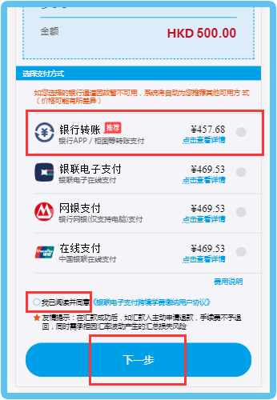
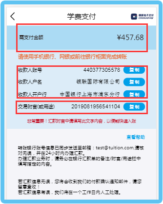
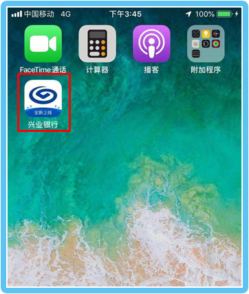
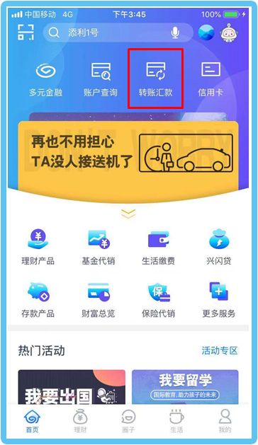
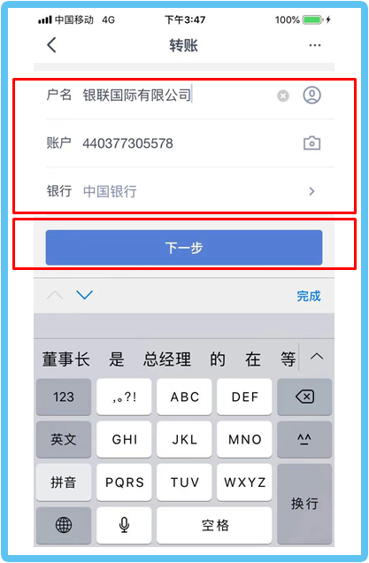
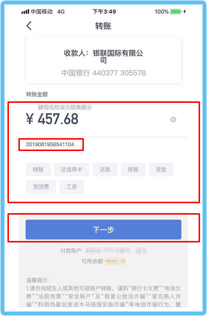
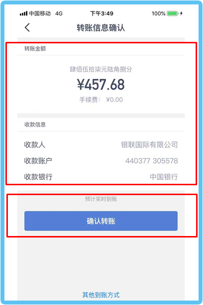
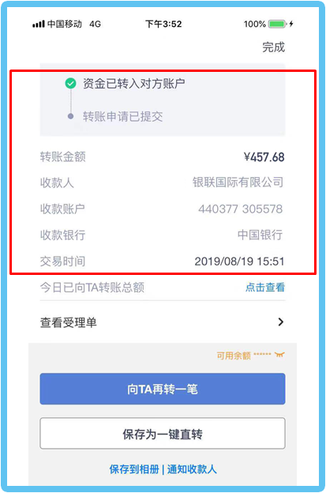
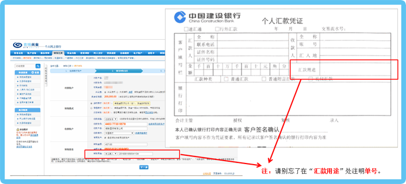
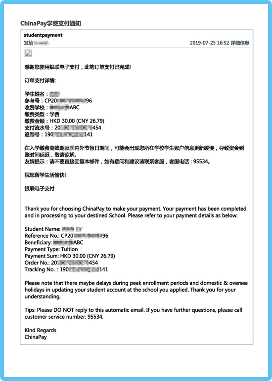

转账说明
步骤一、支付时选择“银行转账”
1、确认人民币支付金额，选择“银行转账”支付方式；
2、阅读《用户协议》，同意协议条款，并勾选确认；
3、点击“下一步”；

步骤二、确认转账金额及账户信息
1、确认需转账的人民币金额；
2、确认转账的收款人账户信息，包含账号、户名、开户行名称；
3、汇款附言/备注/用途，办理汇款时，务必在对应的栏位填写该单号；

步骤三、以兴业银行手机银行转账为例
1、打开并登陆手机银行APP；

2、选择“转账汇款”；

3、填写转账的收款人账户信息，点击“下一步”；

4、填写转账的金额信息，并在汇款备注栏位填写单号，点击“下一步”；

5、确认转账金额、收款信息无误，点击“确认转账”；

6. 输入短信验证码、银行卡密码等信息后，完成转账，显示成功页面；

7、用户也可以通过PC端网银转账，或者前往网点银行柜面填写个人汇款单进行汇款；

步骤四、确认转账成功
用户将最晚在转账成功后的下一个工作日，收到付款确认通知邮件，即表示学费转账支付已成功。
